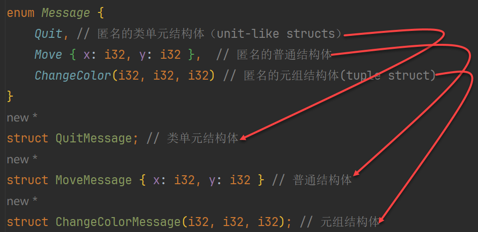

Rust 颠覆过你的面向对象编程世界观吗？

引言
就我个人而言，并没有在过去 面向对象 的编程中吃过什么“先天性顽疾”的苦头，我们所遇到的“麻烦”往往都是因为“设计得还不够好”导致的，在设计模式的指引下通过不断的重构，问题总是可以解决的，即使有些时候解决得不够完美。但也许正因为这样，我们才意识不到面向对象思维本身的缺陷，因为我们遇到了面向对象的问题然后又用面向对象的方式解决了它，这可能会把问题的根源遮掩了过去。在这一点上，语言设计者的目光或许会更敏锐一些，因为开发者往往更关注的是怎样通过优化自己的设计去搞定问题。
总之，现在，我不能确定地说 Rust 这样做（对面向对象特性的“取舍”）就一定是好的，但至少应该不会更差。有取舍就会有得失，这很难量化，不同的语言设计者们基于不同的背景和经历，有了不同的看法，做了不同的选择，这很正常，争论没有意义，用户和市场会验证这些决策是否正确。对于普通的开发者来说，基于语言现有的机制解决实际问题才是第一位的，如果有一天大家开始共同吐槽某项机制时，那就说明它确实有问题了，这一点，在目前的 Rust 面向对象机制中还没有发生，所以，我们可以保持开放的心态继续我们的 Rust 之旅……
正文
此前，我们已经在本博客的数篇文章中介绍了 Rust 语言的一些基本特性，现在，可以展开聊聊 Rust 的面向对象特性了。诚如你所知道的：Rust 没有 Class，不支持继承，从这个角度上说，Rust 不算是一种面向对象的编程语言；同时，Rust 的忠实拥趸们认为：Rust 引入了 trait，使用组合替代了继承，可以实现更好的面向对象编程。本文，我们就来探讨一下 Rust 的面向对象特性。真诚推荐本公众号近期的两篇精华好文： 《你真得懂 Rust 借用检查吗？一文聊透 Borrow Checker 底层逻辑：权限模型》 和 《深入理解 Rust 生命周期（可能是全网最透彻的解读了）》 。
记得在我刚接触 Rust 发现它没有 Class 的时候，我感到非常意外，这甚至影响了我对 Rust 的第一印象：认为它不够高级，可能只是一种改良版的 C 语言。毕竟，当今所有的主流编程语言都是面向对象的，像我这样传统的程序员，很难接受一门编程语言没有类，没有继承。后来，随着对 Rust 的深入了解，我发现它从其他语言里借鉴了很多实用且高级的机制，这让我意识到： Rust 没有提供传统的面向对象机制不是不能，而是不想 。
这确实是一个很值得深思的问题。Rust 的创造者 Graydon Hoare 曾多次公开表达过对 Class 和“继承”的一些批判性看法，现在的 Rust 开发团队也延续着这种观点，Rust 官方对于类和继承的态度可以从《The Rust Programming Language》一书的第 17 章中窥见一二。
1. Rust 放弃了“Class”
不管 Rust 对 Class 持怎样的态度，以“数据 + 行为”这一经典模式存在了数十年的 Class 是有其成功道理的。不过，成也萧何，败也萧何，传统的 OOP 理念确实存在着一些“弊病”， Rust 的设计者们认为： Class 承载了太多东西，包括数据模型、多态、生命周期、基于继承的复用等等，这些机制全部绑定在 Class 这一种载体上，不可避免地形成了一种强耦合关系，给程序设计引入了很多复杂性 。所以，Rust 放弃了 Class，你不能在 Rust 中使用 class 关键字创建一个类。知名程序员 Casey Muratori 也曾在一次演讲（https://www. youtube .com/watch?v=wo84LFzx5nI）中表达过他对 OOP 的一些批判性观点，他认为：
如今的程序员一代又一代只能用面向对象编程的视角来思考编程，比如类、继承层次结构等等。因为他们从小到大只接触过这些概念，看不到其他可能性。OOP 反而阻碍了他们思考更简单的解决方案，甚至让他们根本意识不到问题本身就存在解决方案。它限制了他们能够解决的问题范围。
真是无差别地“扫射”所有人，我想我们中的大多数都是这样的“一代”程序员，从接触编程开始就受面向对象思想的影响，并以此作为设计程序的指导方针。回顾这么多年编写代码的经历，我倒真想不出曾经遇到过什么因为 OOP 机制本身而导致的糟糕处境（当然，也许是我没有意识到问题的根源是类和继承导致的）。我唯一纠结和痛苦过的是面向对象模型和关系模型之间的映射问题，也就是 ORM 问题。尽管使用过多种 ORM 框架，我依然能深刻地体会到两种“模型”天然的“互不相容”性，也就是所谓的“阻抗失配”问题。
回到对 Class 的态度问题上，我觉得对于绝大多数的程序员来说不必纠结于此，更何况 Rust 还有自己的替代方案，并没有将面向对象拒之门外。它从其他语言里借鉴了一些被认为是非常成功的机制（例如 Trait），重新设计了自己的面向对象体系。虽然 Rust 没有 class 关键字，但你却可以通过组合多种 Rust 语言机制创建出一个非常健全的类。这些机制包括：
-
数据：字段 / 成员变量 ➪ Sruct
-
行为：方法 / 成员函数 ➪ Trait + Impl
-
可见性: public / private ➪ Module
2. Rust 放弃了“继承”
以 Class 为基础，面向对象编程最基本的一项特性就是“继承”了。继承首先是一种“代码复用”机制，子类继承父类之后，将自动获得父类的属性和方法；然后，子类通过重写父类中定义的方法，又可以让整个类族（Class Hierarchy）获得“多态”的能力，即：调用端是以父类作为接口编写的，但因子类的具体实现不同而表现出了不同的行为逻辑，这是继承的第二个功能。
相比于 Class，大家对“继承”的态度是比较一致的，即使是在传统的 OOP 语言里，面向对象的设计准则也是鼓励大家： 多用组合，少用继承 。继承最大的问题就是：破坏了封装。在一个类族中，如果我们修改了某个类的方法，那么，它的所有子类都会受到影响，在某些场景下，这会让局面变得无法收拾，所以即使是在纯面向对象语言里，大家也意识到了继承的“副作用”非常大，所以才推荐：多用组合，少用继承。
不过， 很多后续的语言设计者却根本不买账，他们认为：子类不应总是共享其父类的所有特征，但是继承却始终如此，这是继承天生的“缺陷”，既然如此，那就直接把它从语言里移除吧！对于长期受 OO 思想洗礼的程序员来说，这太过“离经叛道”了，但是，Rust 就是这样做了 。看看我们前面引述的 Casey Muratori 的观点，只能说，针对同一个问题，是非对错并不是绝对的，区别只在于我们所做的“取舍”将会换来什么样的“得失”。
Rust 禁止了结构体之间的继承，也就堵死了数据在结构体之间以继承方式被暴露的可能，从数据视角看， 在 Rust 中建模出的实体都被“扁平化”了，也就是在语言层面上没有了任何层级关系 。那在行为能力上又是什么情况呢？过去，我们认为 Dog 和 Cat 都会“叫”（sound）是它们从它们的共同父类 Animal 那里继承了这种“行为”（也是一种“能力”），并表现出了一定的“差异”（也就是“多态”）：Dog 的叫是 “bark”，Cat 的叫是 “meow”。如今，在 Rust 里，Dog 和 Cat 不再有任何“亲缘”关系（no common parent），彼此是“陌生”的，它们之所以都能“叫”仅仅是因为：它们都贴了同一张叫“Soundable”的“功能贴纸”（Functionality Stickers，这是我很喜欢的一种比喻，它贴切地反映了 Rust 中 trait 的功能定位），也就是各自实现了“Soundable”这个 trait。有时候，你可能会觉得这种设计“有些牵强”，并不符合人们对事物的自然理解，或者说是我们过去的设计习惯， 你会在 Rust 面向对象设计的初期不断地感受到这种“差异”，总是觉得自己设计的领域模型不够 OO，这并不完全是因为你对语言的驾驭能力还不够导致的，还有一部分原因是 Rust 确实限制了我们在某些方向上的发挥，原因就是 Rust 放弃了某些传统 OO 机制导致的，这一点不用回避，当然，有舍就有得，收益的部分我们也提过了 。
此外，需要单独提一下的是：Rust 是允许 trait 继承的，但是这种继承和我们理解的那种继承完全没有关系。当一个 trait A 继承了一个 trait B 时，并不表示 A 拥有了 B 的方法，它只是告诉 A 的实现者必须要同时实现 B 的方法，因为：trait A 继承 trait B 表示 A “依赖”到了 B，最常见的情况就是在 A 的某个方法的默认实现中调用了 B 声明的某个方法。所以，在 Rust 中，trait A: B 并不是 A 继承了 B 的实现，而 A 在 B 的基础上增加了新的能力要求，这也是一种“扁平化的能力叠加方式”，绝非传统的继承。
3. Rust 引入了“Trait”
十年前，当我学习 Scala 时，我并不知道 OO 世界里还有 Trait 这种东西，那也是我第一次意识到：原来面向对象机制还在不断地进化。十年后，学习 Rust 时，我又遇到了 Trait，原本庆幸“又遇到了一项熟悉的机制，可以少费些力气了”，仔细一看，发现 Rust 的 Trait 和 Scala 的 Trait 又不一样。
在 Rust 里，Trait 被定位于专门针对“行为”进行抽象的一种设施，它和 Struct 相互协作，共同对现实世界中的“概念”或“实体”进行建模。你可以在 Rust 里感受到一种明显的“设计意图”：Rust 设计者不想让数据和行为硬性地绑定在一起，他们将数据和行为拆分开，然后用 Struct 和 Trait 分别去承载，再根据需要使用 impl 语法将它们“组装”起来去表示一个实体。这与传统意义上的面向对象系统确实有很大的差异，总是会给刚接触 Rust 的程序员一种“破碎感”。这正印证了文章开头提到过的：Rust 的设计者认为 Class 承载了太多东西…
Trait 在 Rust 不单单是行为的抽象，它还肩负起了继承缺失后对“多态”的支持，尽管它的实现方式与传统的 OO 方式非常不同。Rust 通过Trait + 泛型的组合（也就是静态分发）以及 dyn Trait (也就是动态分发），实现了事实上的“多态”，通过 Trait Bound 还可以精细地控制哪些类型实现哪种行为逻辑，既无重复代码，又可以进行细粒度的“多态”控制，这是很优秀的一点。
4. Rust 里与面向对象有关的 “新玩法”
以上几个大的“变动”塑造了 Rust 非常独特的面向对象特性，再加上 Rust 里其他一些语言机制的参与，使得我们可以在 Rust 里见到一些在传统 OOP 里没有见过的“新玩法”。
➢ 枚举升级为了原生的 OOP 对象
我们曾在 《Rust 语言特性：枚举》 一文中介绍过：枚举的每一个成员（variants），本质上都是一个匿名结构体，枚举值就是枚举成员的实例。Rust 确实把枚举提升到了在其他语言里都不曾有过的高度，它之所以能拥有这样的能力，很大程度上是因为它被升级为对象实体才获得的。下图展示了每个枚举成员（variants）被编译器编译成一个结构体的样子（示意性代码，仅供理解参考）：

➢ 追加扩展（Retroactive Extension）能力
在 Rust 中，我们可以为一个已经定义好的类型“补充”行为，也就是追加 Trait。很简单，看一下例子就知道了，先定义一个自己的 trait：
1 | trait PrettyPrint { |
然后，在未来为某个需要的类型（特别是不由自己控制的三方类型）添加这个 trait 所描述的能力：
1 | impl PrettyPrint for Vec<String> { |
这看上去没什么了不起的，但在传统 OO 语言中是无法用这种“开小灶”的方式给类添加方法的。这有什么用呢？一个典型的用途是：在不修改源码的情况下，扩充第三方类库！这是一种很有用的语言能力。在 Scala 里也有类似的功能，叫 Implicit Conversion（隐式类型转换），利用它可以很优雅地在第三方类库的基础上追加一些自定义功能或将第三方类库更顺滑的适配到自己的编程环境中。
➢ 关联类型：Trait 的“小机关”
关联类型（Associated Type）是 Rust Trait 中一个精准解决目标问题的特性。关联类型（Associated Types）是一个将类型占位符和 trait 绑定在一起的方式，这样在 trait 的方法签名中就可以使用这些占位符类型。关联类型经常会被拿来和泛型做比较，因为它们之间的语义差别非常微妙，也容易被混淆。
关联类型跟泛型的一个根本区别是：泛型的具体类型是由调用者决定的，而关联类型的具体类型是由实现者决定的，如果某个类型参数是“实现者固有的一部分”，就应该使用关联类型，而不是泛型，这种情况下使用泛型只会将内部类型“外化”，在所有使用到的地方显示传递，造成无意义的类型参数爆炸。关于关联类型更多的信息，可以参考《Rust 语言特性：关联类型》。
还有一些与面向对象有关的机制，我们不再展开了。面向对象不是孤立的特性，它会和其他机制相互影响和制约，例如在 Rust 中再简单的对象也会受到所有权系统的约束，这是别的语言里都没有的。
5. 结语
毫无疑问，一些过去我们熟悉的 OO 建模方案在 Rust 里因为语言的限制和引导需要重新设计，对于业务实体的抽象（是结构体还是特质？）和层级关系的处理（没有了层级关系，具有相似性的业务实体之间怎样处理“共性”部分和表达关系？）等很多问题都要重新考虑 。我的一个直觉是：在 Rust 中建模出的领域模型将更加“扁平化”，过去的业务实体会被拆分到更多更细粒度的结构中（特别是 trait）然后再组合成一个相对独立的整体。此外，还有一个更实际的问题：我们得想方设法给各种 trait 起一些“说得过去”的名字，trait 的名称之所以难取，也是因为 Rust 在一定程度上影响到了建模的方式和思维，对于习惯了传统 OO 建模的程序员来说需要一个适应的过程。
最后，我想说的是：我们不应该盲目地相信一种观点或论断，一个好的程序员应该根据实际的使用经验去批判性地思考，而不是无脑跟随别人的论调。就我个人而言，并没有在过去面向对象的编程中吃过什么“先天性顽疾”的苦头，我们所遇到的“麻烦”往往都是因为“设计得还不够好”导致的，在 设计模式 的指引下通过不断的重构，问题总是可以解决的，即使有些时候解决得不够完美。但也许正因为是这样，我们才意识不到面向对象思维本身的缺陷，因为我们遇到了面向对象的问题然后又用面向对象的方式解决了它，这确实可能会把问题的根源遮掩了过去。在这一点上，语言设计者的目光或许会更敏锐一些，因为开发者往往更关注的是怎样优化自己的设计去搞定问题。
总之，现在，我不能确定地说 Rust 这样做（对面向对象特性的“取舍”）就一定是好的，但至少应该不会更差。有取舍就会有得失，这是很难量化的，不同的语言设计者们基于不同的背景和经历，有了不同的看法，做了不同的选择，这很正常，争论没有意义，用户和市场会验证这些决策是否正确。对于普通的开发者来说，基于语言现有的机制解决实际问题才是第一位的，如果有一天大家开始共同吐槽某项机制时，那就说明它确实有问题了，这一点，在目前的 Rust 面向对象机制中还没有发生，所以，我们可以保持开放的心态继续我们的 Rust 之旅……
参考资料：
https://users.rust-lang.org/t/from-tony-hoare-to-graydon-hoare/132033/20
https://www.youtube.com/watch?v=wo84LFzx5nI
https://graydon2.dreamwidth.org/307291.html?utm_source=chatgpt.com
https://www.thecodedmessage.com/posts/oop-3-inheritance/?utm_source=chatgpt.com
Rust 颠覆过你的面向对象编程世界观吗？